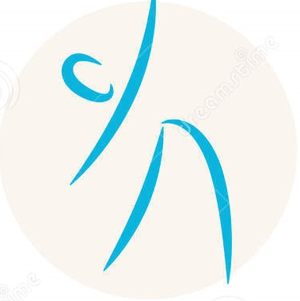

ALMA YOGA
Inhala el Futuro, Exhala el Pasado
Beneficios de hacer Yoga
El yoga es una práctica que conecta el cuerpo, la respiración y la mente . Esta práctica utiliza posturas físicas, ejercicios de respiración y meditación para mejorar la salud general. El yoga puede mejorar el nivel general de su estado físico y mejorar su postura y su flexibilidad. Ayuda a reducir su presión arterial y su frecuencia cardíaca, relajarse, mejorar su confianza en usted mismo, reducir el estrés, mejorar su coordinación, mejorar su concentración, a dormir mejor, etc.

